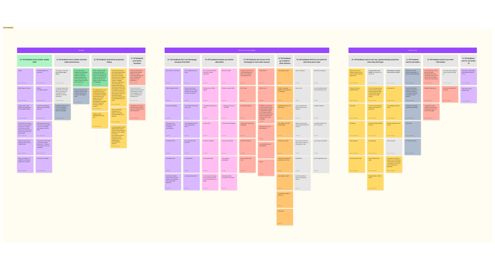
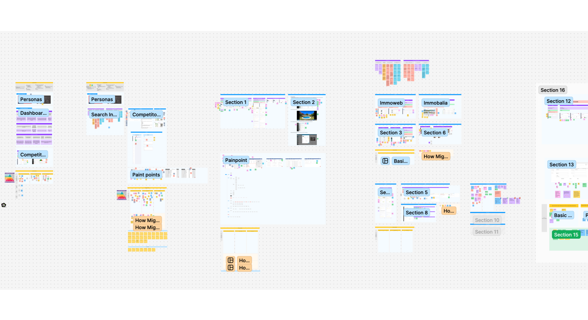
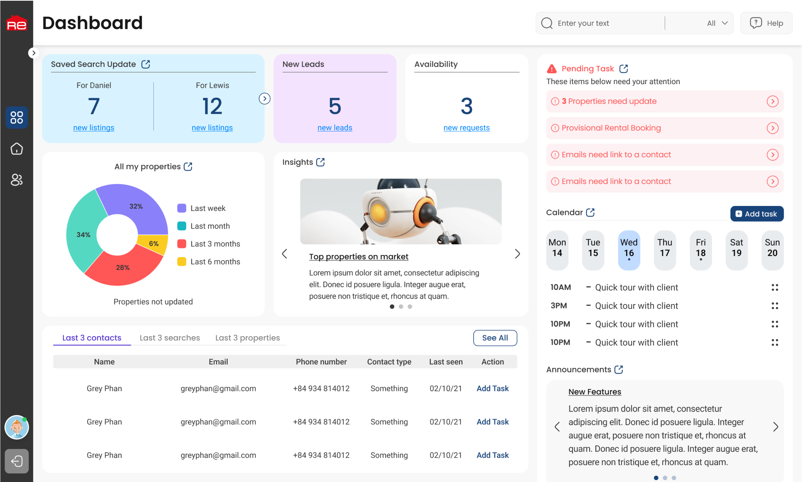
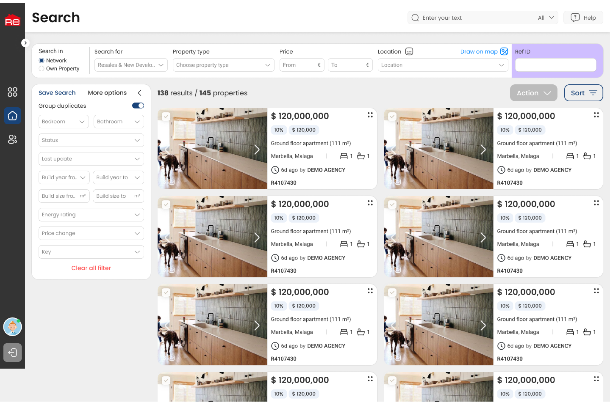
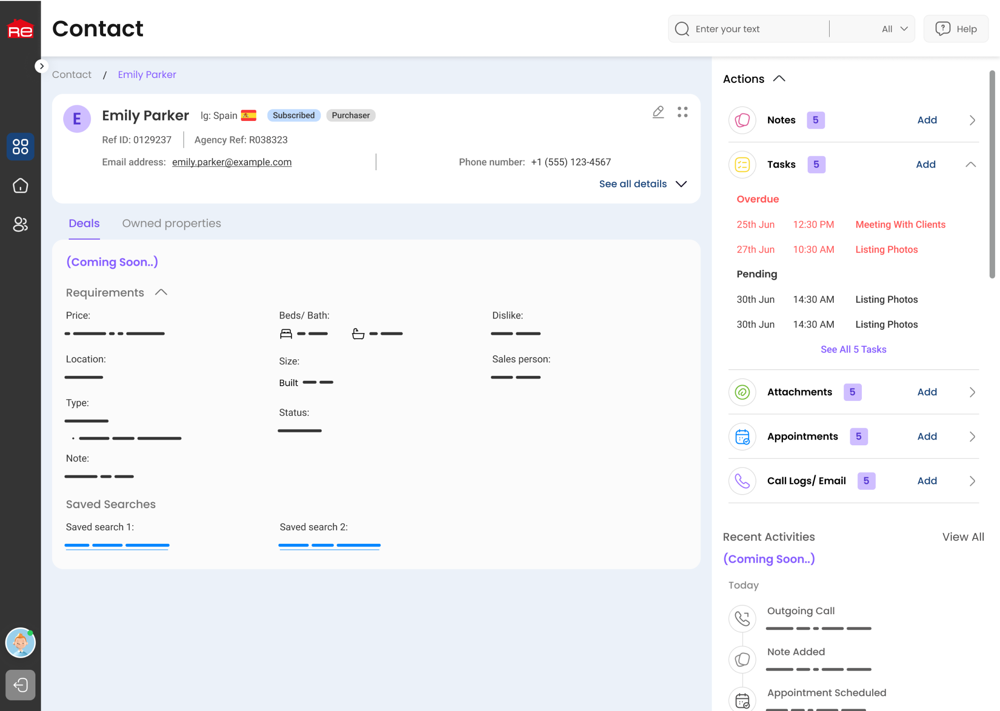
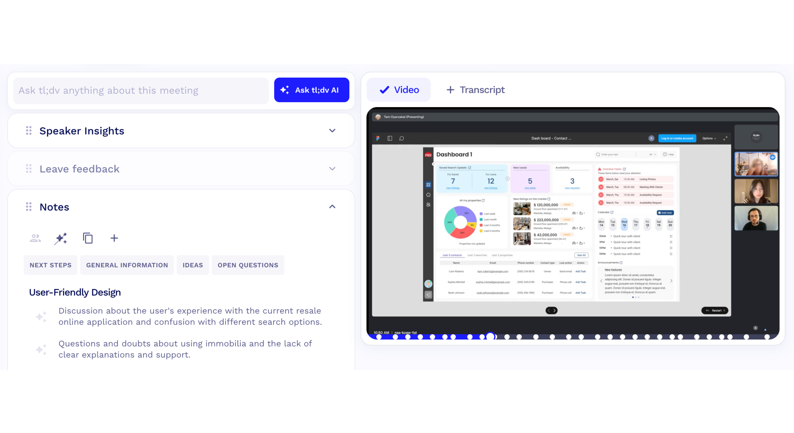
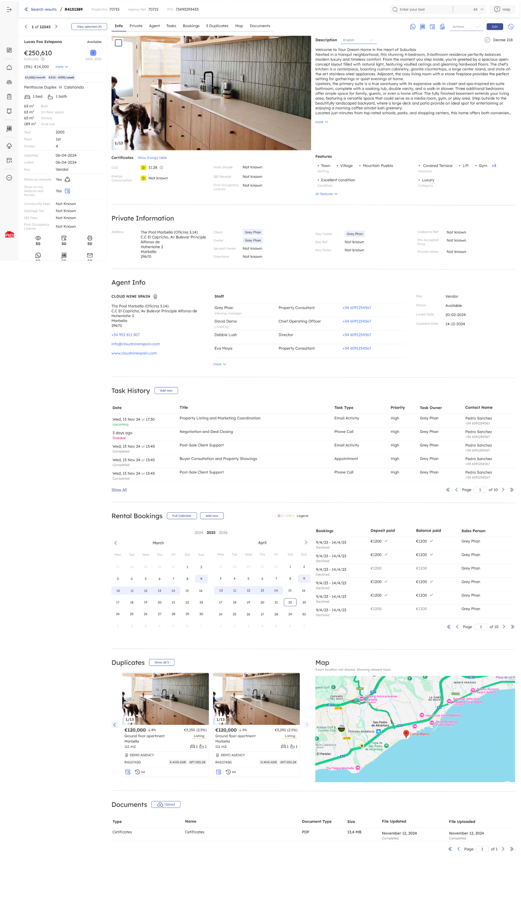

Resales Plus
-
My role: Lead Product Design
-
Duration: Aug, 2022 - Feb 2024
-
Tools: Figma, FigJam, TL;DV, Survey Monkey
-
Method: Design thinking, Agile
Project Overview
1. Introduction
For over two decades, Resales Online was a trusted tool for real estate agencies, but its UX remained outdated. As the Lead Product Designer, I led a full-scale redesign through UX research, surveys, and collaborative workshops, shifted stakeholder focus from minor tweaks to a complete new product, Resales Plus—an intuitive, efficient, and engaging experience.
2. Problem statement
Despite its strong reputation, Resales Online struggled to keep pace with contemporary user expectations. Its outdated UI and fragmented workflows made navigation difficult, leading to inefficiencies. The absence of a user-centered approach in past iterations frustrated users, highlighting the need for a modern, structured experience.
3. Product Goal
The goal was to merge modern usability standards with familiar functionalities, ensuring a smooth transition for existing users. By streamlining workflows, improving productivity, and enhancing user interactions, Resales Plus redefines how real estate professionals manage daily operations efficiently.
The Process
1. Understanding
Challenge
Resales Plus was built upon a legacy platform that had accumulated over two decades of features and functionalities. However, the existing Information Architecture (IA) lacked clarity, leading to a cluttered experience where users struggled to find what they needed. The platform had too many features with unclear objectives, resulting in a complex and confusing user experience.
Additionally, many features were poorly designed and not user-friendly, making it difficult for users to complete essential tasks efficiently. The lack of usability improvements over the years meant that several features had become obsolete or underutilized. More critically, there was no clear understanding of the core user goals and pain points, making it challenging to implement meaningful design improvements.
Approach
To address these challenges, I began by conducting a comprehensive product audit, evaluating each feature’s purpose, usability, and relevance. This helped us identify redundant or ineffective functionalities that could be streamlined or eliminated. To gain deeper insights, we conducted UX research, including quantitative surveys and qualitative interviews, engaging real estate professionals to understand their primary needs, pain points, and expectations.
Following our research, we facilitated collaborative workshops with stakeholders to redefine the Information Architecture (IA) and user flow. Through iterative brainstorming sessions, we identified and prioritized core features, ensuring they were both useful and accessible. This process was followed by the development of wireframes, high-fidelity prototypes, and interactive mockups, which were continuously refined based on user feedback.
2. Research
Research & Identifying Core Features
We conducted user surveys to collect feedback from existing users, focusing on identifying their biggest challenges and most frequently used features. Through this research, we found that the Dashboard and Search functionalities were the most critical areas requiring improvement. The Dashboard lacked clear data visualization and workflow efficiency, while the Search experience was hindered by complex filtering options and an outdated interface.
Ideation & Brainstorming Sessions
Once identified the primary focus areas, I conducted collaborative brainstorming workshops with stakeholders, product managers, and engineers. These sessions were instrumental in restructuring the information architecture and redesigning user flows, by using white boarding techniques and UX mapping tools such as FigJam. We also prioritized feature development based on feasibility and user impact, ensuring that the redesign addressed both business goals and user needs.
Wireframing & High-Fidelity Design
With a clear direction established, I started designing wireframes in Figma, focusing on the restructured Dashboard and Search experience. Low-fidelity wireframes were shared with internal teams for early feedback, allowing us to refine layouts and workflows before progressing to high-fidelity designs. The final high-fidelity UI incorporated a modern visual style, improved accessibility, and refined interaction elements that made navigating the platform seamless. Each iteration was informed by usability insights, ensuring that the new interface was both aesthetically pleasing and highly functional.
Prototyping & Usability Testing
To validate our design decisions, I developed interactive prototypes and conducted usability testing sessions with selected users via video calls and Figma prototypes. Participants were tasked with real-world scenarios, such as searching for properties using specific filters and managing listings from the new Dashboard. These sessions provided valuable qualitative feedback, highlighting areas of friction and opportunities for further refinement. Based on the findings, we made iterative adjustments to improve clarity, streamline workflows, and enhance the overall usability of Resales Plus. The final product successfully bridged the gap between user expectations and business objectives, resulting in a more efficient, intuitive, and user-friendly experience for real estate professionals.
Refine
Refining the Design to Align with Business Goals & User Feedback
After completing usability testing and gathering extensive user feedback, we collaborated with stakeholders to ensure the refined design aligned with both business goals and user expectations. We analyzed areas where user needs and business objectives intersected, ensuring that our design adjustments not only improved usability but also supported long-term growth and product adoption.
One of the key changes we implemented was shifting our main breakpoint from 1440px to 1920px, as our research showed that most of our users operated on larger screens.
Another key change was transitioning the Search Results Page from infinite scroll to a paginated format. Our usability testing revealed that users frequently accessed this page throughout the day, and infinite scrolling was consuming unnecessary web storage and slowing performance.
Additionally, we refined our component styles to better align with business branding and visual identity. This involved updating typography, color schemes, and UI elements to create a more cohesive and polished appearance. We also restructured the layout to maximize information density, allowing users to quickly scan and access crucial data for their daily tasks.
